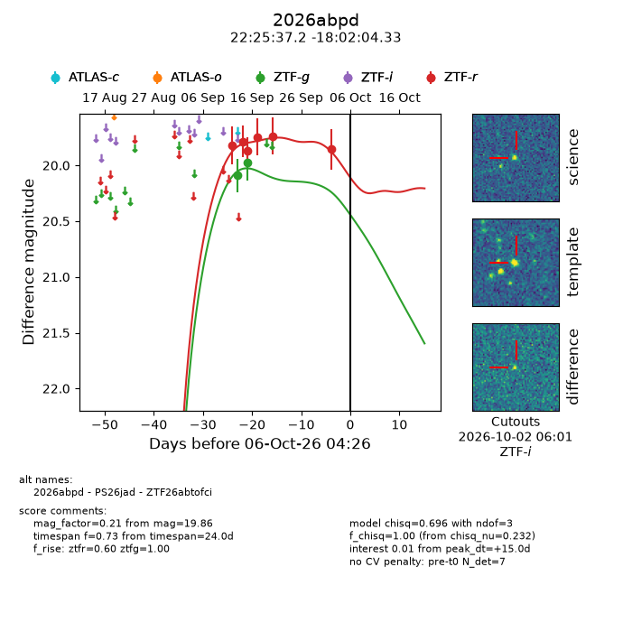
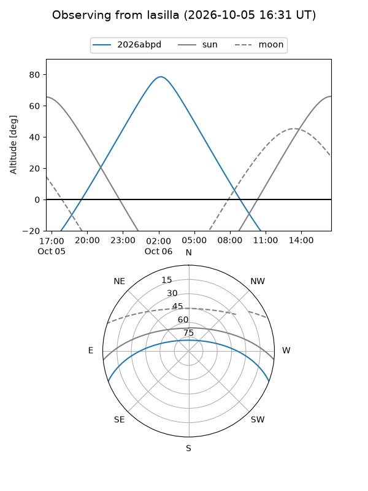
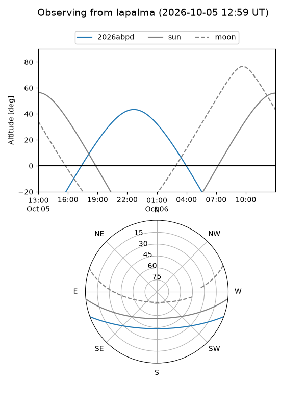
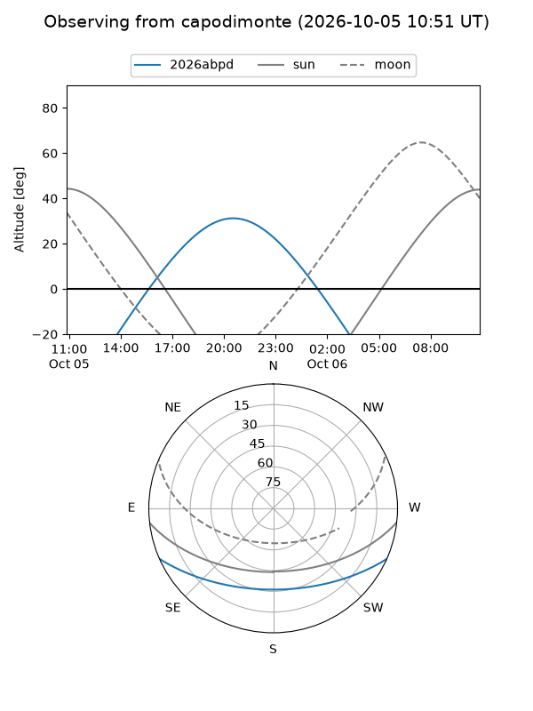
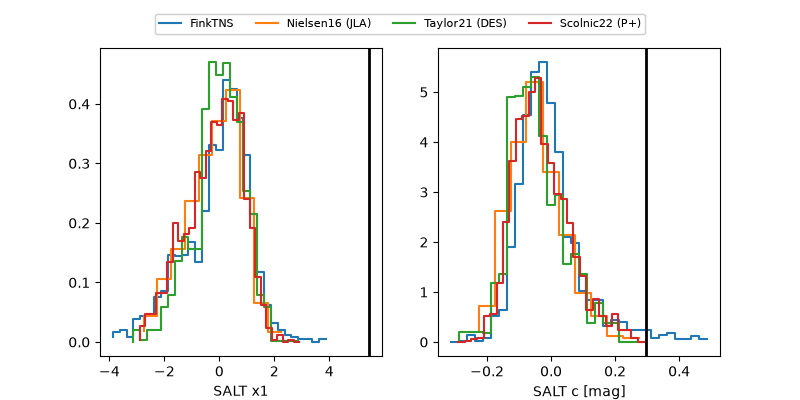

2026abpd
Target 2026abpd at 2026-10-06 04:29
Aliases and brokers:
FINK-ZTF: ztf.fink-portal.org/ZTF26abtofci
Lasair-ZTF: lasair-ztf.lsst.ac.uk/objects/ZTF26abtofci
ALeRCE-ZTF: alerce.online/object/ZTF26abtofci
YSE-PZ: ziggy.ucolick.org/yse/transient_detail/2026abpd
TNS name: wis-tns.org/object/2026abpd
Direct TNS query: direct search
alt names
ZTF26abtofci (ztf,fink_ztf)
2026abpd (tns,yse)
PS26jad (panstarrs)
Coordinates:
equatorial (ra, dec) = 336.4051,-18.03454
equatorial (HMS+DMS) = 22:25:37.22,-18:02:04.33
galactic (l, b) = (40.3151,-55.26970)
Flags:
TNS type: nan
peak dt: +15.0
Photometry:
last ztfg=19.98, ztfr=19.86
2 ztfg, 6 ztfr detections
Lightcurve

Visibility



Additional plots
